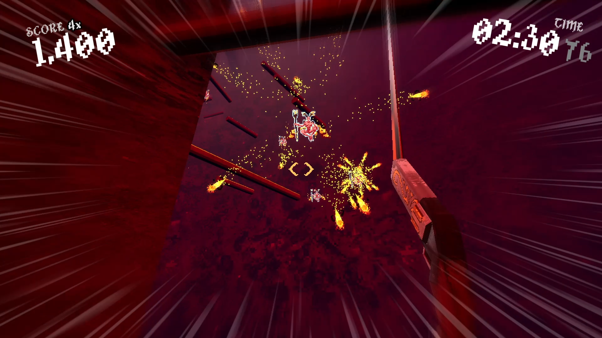
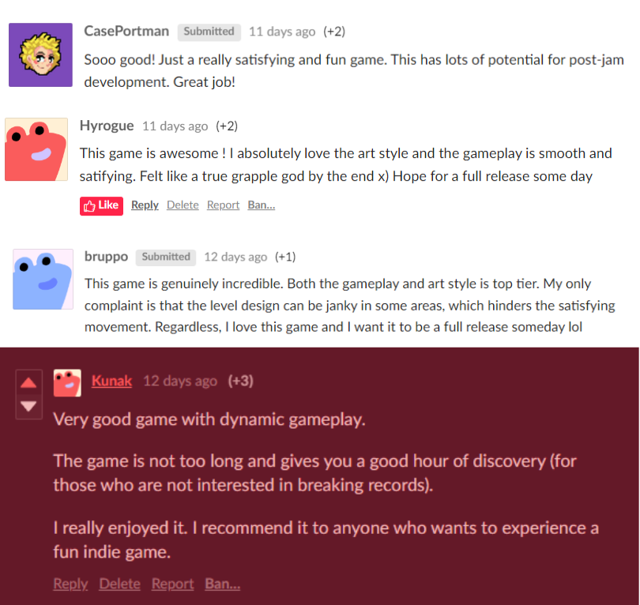

| Team Size |
3 |
| Project Duration |
3 days |
| Target Platform |
PC |
| Engine / Language |
Unreal Engine 5 / C++ |
During SpeedJam #5, a Game Jam about creating the best “speedrunable” game, our team of three—Kamil Czarnecki (me; programming), Hugo Belperron (art), and Clyphdrops (music/sfx)—created a fast-paced, dynamic grapple hook game titled "Grapple God." The game, developed over an intense 72-hour period, garnered exceptional feedback for its fun mechanics and exhilarating gameplay.
Download and play the game on itch.io.
Concept
"Grapple God" challenges players to speedrun their way out of hell using a grappling hook to navigate and climb a treacherous tower and slay demons by crashing into them at high speed. The gameplay is a blend of precision, strategy, and quick reflexes, demanding players to master the art of momentum and timing.
As the lead programmer, I was responsible for developing the core gameplay mechanics and ensuring the game's performance and stability. Utilizing Unreal Engine 5 and C++, I implemented the grappling hook system, enemy AI, collision and trace detection, as well as implementing everything in-engine. Key aspects of my contributions included:
- Grappling Hook Mechanics - Developed a physics-based grappling hook system that allowed for dynamic interactions with the environment. This involved creating smooth, responsive controls and ensuring the hook pendulum movement physics were realistic and fun.
- Collision and Damage System - Designed and implemented a collision detection system to manage interactions between the player, demons, and environmental objects. Also adding in elements for game feel, such as slowing down time when eliminating demons, or other effects.
- Performance Optimization - Optimized code and game assets to ensure smooth performance across various hardware configurations. With the time constraint in mind I used the profiler to locate the heaviest performers in the game. Mostly, these were Unreal default features that I had to disable to ensure the game ran smoothly on various devices.
Challenges and Solutions
The rapid development timeline posed several challenges.
With only 72 hours to develop the game, efficient time management and prioritization were crucial. We adopted an agile development approach, allowing us to iterate quickly and incorporate feedback from playtesting sessions.
Achieving realistic and enjoyable grappling physics required extensive tuning. I implemented advanced physics algorithms to enhance player movement beyond the raw rope pendulum and adjusted the physics engine parameters to balance realism with fun gameplay.
Creating the demons was an interesting task, as it was crucial that the game contained as little AI as possible (or other randomisation). The only piece of randomisation the game contains is the angle at which demons shoot their fireballs at the player, as it varies ever so slightly. This adds another layer of challenge to the run, and avoids “ideal” runs where players can simply do the exact moves at exact timing for ideal results.
Ensuring the game ran smoothly on various devices was essential. I utilized Unreal Engine 5’s profiling tools to identify bottlenecks and optimize rendering, collision detection, and physics calculations.
Outcome and Feedback
"Grapple God" was met with positive feedback from both players and judges at SpeedJam #5. The game was praised for its innovative mechanics and challenging gameplay. It demonstrated our ability to rapidly develop a high-quality game under tight constraints, showcasing our skills in programming, art, and sound design.
Thank you for reading! Please try playing the game on itch.io (click) and let me know what you think!
Kamil